About
I am currently a researcher at the vivo Imaging Department, where I work on AI photography R&D. I received my Ph.D. from Shanghai Jiao Tong University in 2024, advised by Prof. Xiaokang Yang and Prof. Yunbo Wang, and my B.S. from Xidian University in 2017.
Over the years I have interned at Tencent XR, SenseTime, Tencent YouTu Lab, and miHoYo, working across computer vision, AIGC, and gaming.
Research interests: high-resolution image generation, video synthesis, and world models for next-generation computational photography.
Publications
* Co-first author · † Project lead · Oral · Spotlight
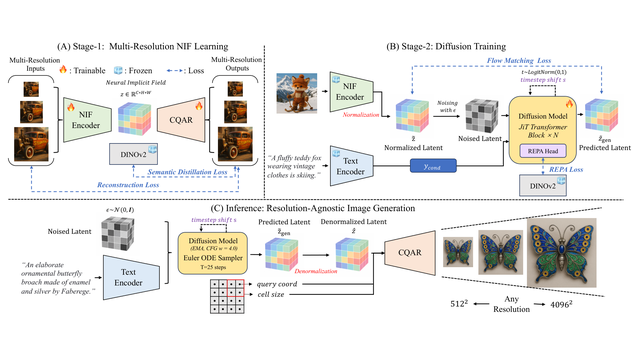
RaPD: Resolution-Agnostic Pixel Diffusion via Semantics-Enriched Implicit Representations
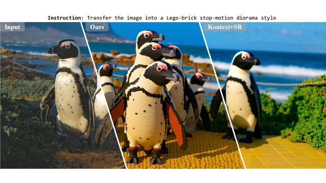
VINS-120K: Ultra High-Resolution Image Editing with A Large-Scale Dataset
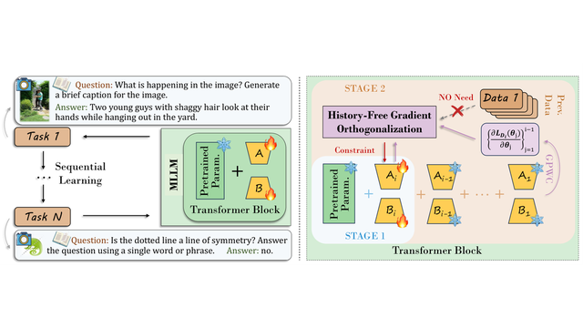
Octopus: History-Free Gradient Orthogonalization for Continual Learning in Multimodal Large Language Models
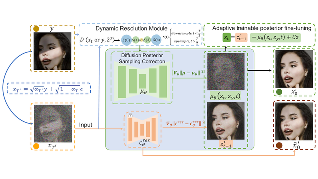
LearnIR: Learnable Posterior Sampling for Real-World Image Restoration
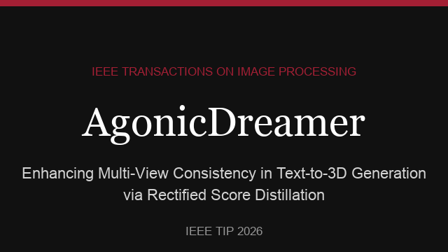
AgonicDreamer: Enhancing Multi-View Consistency in Text-to-3D Generation via Rectified Score Distillation
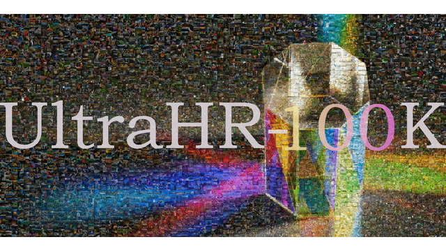
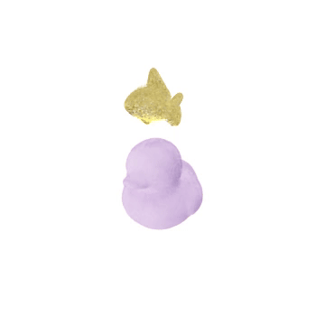
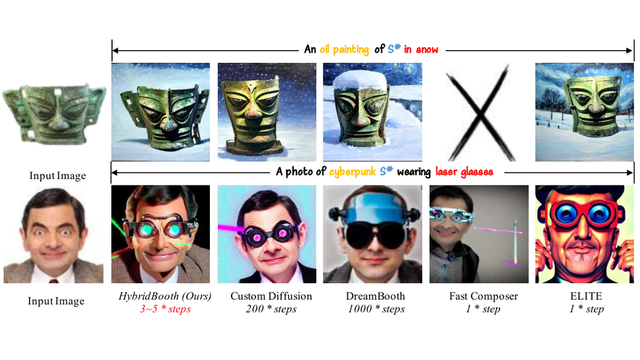
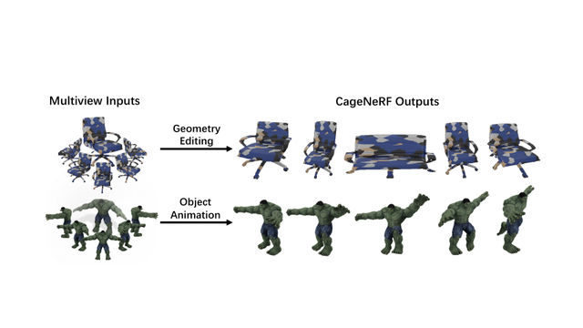
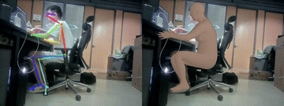
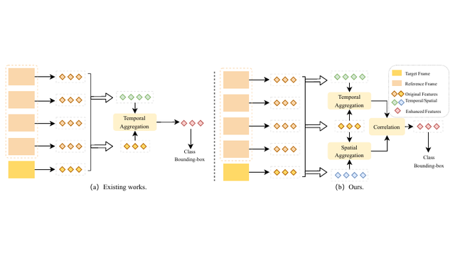
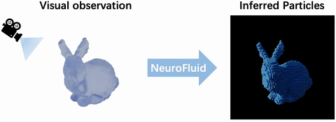
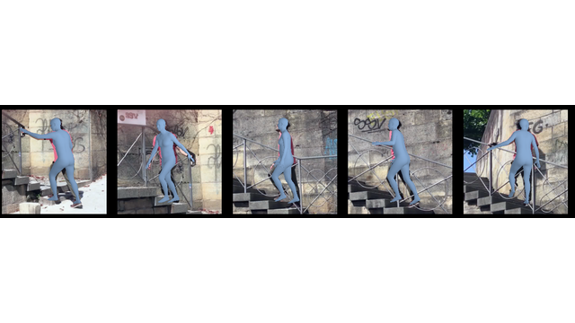
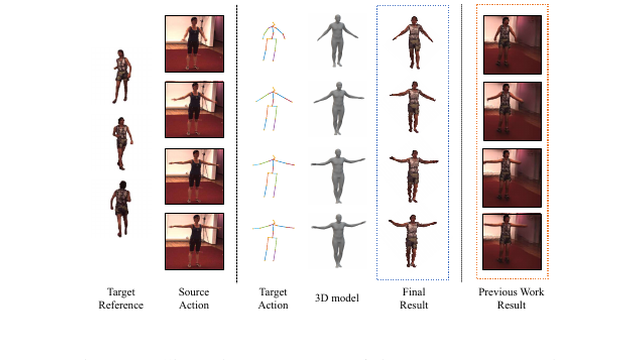
Human Action Transfer Based on 3D Model Reconstruction
Preprints
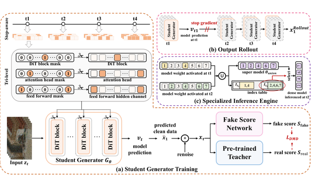
Dynamic-in-Few-Step: Unifying Dynamic Computation and Few-Step Distillation for Efficient Video Generation
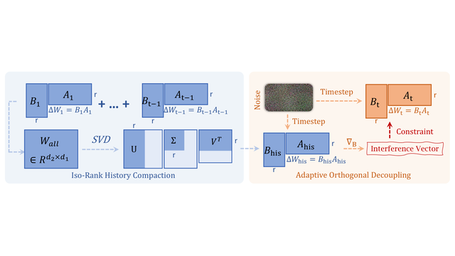
ACE-LoRA: Adaptive Orthogonal Decoupling for Continual Image Editing
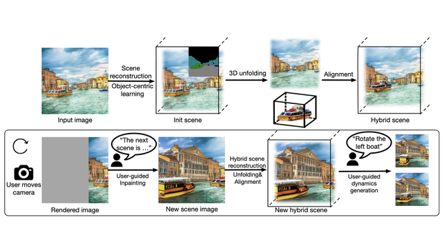
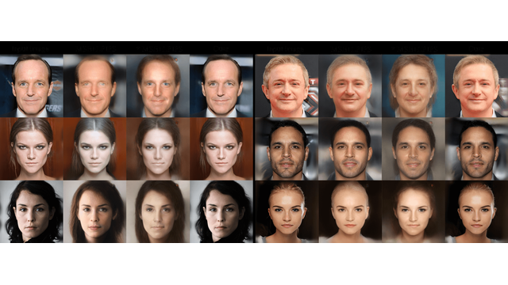
Collaborative Learning for Faster StyleGAN Embedding
Talks
Next-Gen Camera Systems: Instilling Intuitive Imagination in Smartphones
IJCAI 2024 Industry Day
Next-Gen Camera System: Instilling Intuitive Imagination in Smartphones
GAMES Webinar 337
基于视觉的领域泛化和物理运动推断
智东西公开课
基于视觉的物理规律反演
智东西公开课